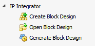

IP Integrator 環境では、ブロック デザインを編集できます。Vivado® IP インテグレーター機能を使用すると、Vivado IP カタログまたはカスタム IP リポジトリからの IP をデザイン キャンバス上でインスタンシエートおよびインターコネクトして、複雑なデザインを作成できます。
ブロック デザインを開いて Flow Navigator の [IP Integrator] をクリックすると、IP Integrator 環境をアクティベートできます。ブロック デザインがまだ開いていない場合は、[Open Block Design] コマンドをクリックします。
|
IP Integrator 環境からは、次が実行できます。
|
 |
関連項目
 |
Vivado デザイン ハブ - IP インテグレーターの使用 |
 |
Vivado Design Suite QuickTake ビデオ : Vivado IP インテグレーターを使用したデザイン |